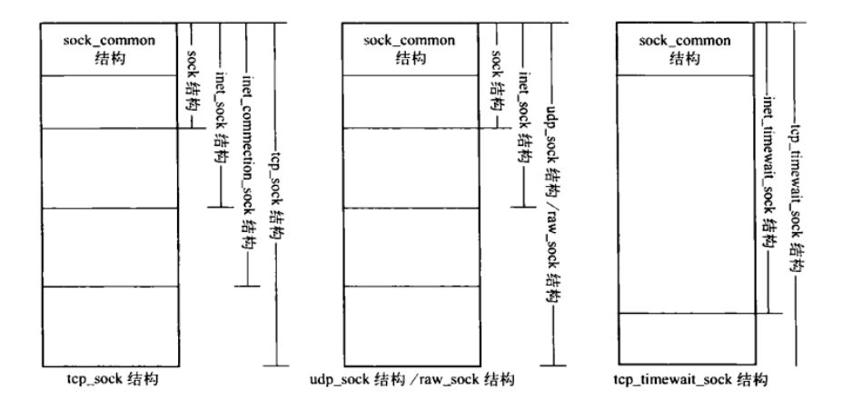

传输控制块
Table of Contents
各协议族传输层使用各自的传输控制块存放套接口所要求的信息。
Linux内核根据协议续和传输层协议的特点，分层次的定义了多个结构用来组成传输控制块。IPv4协议族包括 sock_common、sock、inet_sock、inet_connection_sock、tcp_sock、request_sock、inet_request_sock、tcp_request_sock、inet_timewait_sock、tcp_timewait_sock、udp_sock、raw_sock结构。
- sock_common 传输控制块信息的最小集合，用来构成sock和inet_timewait_sock结构前面的部分。
- sock 通用的网络层描述块，是构成传输控制块的基础，与具体的协议无关。sock结构描述了各协议族传输层协议的公共信息，因此不能直接作为传输层控制块来使用，不同协议族的传输层在使用该结构时都会对该结构进行扩展，来适合各自的传输特性，例如 inet_sock 结构由 sock 结构以及其他特性组成，构成IPv4协议族传输控制块的基础。
- inet_sock 通用的IPv4协议族描述块，包含IPv4协议族基础传输层，即UDP、TCP以及原始传输控制块共有的信息（例如：外部和本机IP地址、外部和本地端口、IP首部原型、该端结点使用的IP选项等）。
- inet_connection_sock 支持面向连接特性的描述块，构成IPv4协议族TCP控制块的基础，在inet_sock结构的基础上加入了支持连接的特性。
- tcp_sock TCP传输控制块，支持了完整的TCP特性，包含了TCP为各连接维护的所有结点信息（两个方向的序号、窗口大小、重传次数等）。
- inet_timewait_sock 面向连接特性的TCP_TIME_WAIT状态的描述，是构成tcp_timewait_sock的基础。
- tcp_timewait_sock TCP_TIME_WAIT状态的描述块，是一种比较特殊的传输块，当TCP的状态为TCP_TIME_WAIT时，tcp_sock结构会蜕变为tcp_timewait_sock结构。
- udp_sock UDP传输控制块，支持UDP的完成特性。UDP需要的信息在inet_sock结构中描述。
tcp_sock、udp_sock、raw_sock和tcp_timewait_sock结构组成如下图：

Figure 1: 传输控制块组成结构
1 系统参数
- optmem_max 每个传输控制块辅助缓冲区的上限，辅助数据包括进行设置选项、设置过滤时分配的内存和组播设置，通常使用sock_kmalloc()分配。
- rmem_default 传输控制块接收缓冲区大小的上限的默认值。
- rmem_max 传输控制块接收缓冲区大小的上限最大值。
- wmem_default 传输控制块发送缓冲区大小的上限的默认值。
- wmem_max 传输控制块发送缓冲区大小的上限的最大值。
2 传输描述块结构
2.1 sock_common结构
sock结构和inet_timewait_sock结构的前面部分都是相同的，使用sock_common结构来描述。
/** * struct sock_common - minimal network layer representation of sockets * @skc_family: 所属协议族 * @skc_state: TCP状态 * @skc_reuse: %SO_REUSEADDR 标识是否可以重用地址和端口 * @skc_bound_dev_if: 输出报文的网络设备索引号 * @skc_node: TCP维护一个所有TCP传输控制块的散列表tcp_hashinfo, 而skc_node用来将所属TCP传输控制块链接到该散列表 * @skc_bind_node: 已绑定端口的传输控制块通过该字段插入到与之绑定端口信息结构为头结点的链表中。 * @skc_refcnt: 引用计数 * @skc_hash: 存储TCP状态为established时加入到散列表的关键字的键值。由于计算键值相对耗时，因此用该成员来存储键值有利于提高效率。 * @skc_prot: 指向网络接口层的指针。 * * This is the minimal network layer representation of sockets, the header * for struct sock and struct inet_timewait_sock. */ struct sock_common { unsigned short skc_family; volatile unsigned char skc_state; unsigned char skc_reuse; int skc_bound_dev_if; struct hlist_node skc_node; struct hlist_node skc_bind_node; atomic_t skc_refcnt; unsigned int skc_hash; struct proto *skc_prot; };
2.2 sock结构
sock结构是构成传输控制块的基础，跟具体的协议族无关，包含各协议族传输层协议的公共信息，因此不能直接作为传输层的控制块来使用，不同协议族的传输层在使用sock结构时都会对其进行扩展，使其适合各自的传输特性。
struct sock { // struct sock_common __sk_common; #define sk_family __sk_common.skc_family #define sk_state __sk_common.skc_state #define sk_reuse __sk_common.skc_reuse #define sk_bound_dev_if __sk_common.skc_bound_dev_if #define sk_node __sk_common.skc_node #define sk_bind_node __sk_common.skc_bind_node #define sk_refcnt __sk_common.skc_refcnt #define sk_hash __sk_common.skc_hash #define sk_prot __sk_common.skc_prot //关闭接口标志， RCV_SHUTDOWN SEND_SHUTDOWN SHUTDOWN_MASK unsigned char sk_shutdown : 2, //标识是否对RAW和UDP进行校验和，UDP_CSUM_NOXMIT UDP_CSU_NORCV UDP_CSUM_DEFUALT sk_no_check : 2, /* 标识传输层状态 SOCK_SNDBUF_LOCK 用户通过套接口选项设置了发送缓冲区大小 SOCK_RCVBUF_LOCK 用户通过套接口选项设置了接收缓冲区大小 SOCK_SNDBUF_LOCK 已经绑定了本地地址 SOCK_SNDBUF_LOCK 已经绑定了本地端口 */ sk_userlocks : 4; //当前域中套接字所属的协议 unsigned char sk_protocol; //套接口类型 （SOCK_STREAM SOCK_DGRAM） unsigned short sk_type; //接收缓冲区大小的上限 int sk_rcvbuf; /*同步锁，一是用于用户进程读取数据和网络层向传输层传递数据之间的同步锁; 二是控制Linux下半部访问本传输控制块的同步锁。*/ socket_lock_t sk_lock; //进程等待队列。进程等待连接、等待输出缓存区、等待读数据时，都会将进程暂存到此队列中。 wait_queue_head_t *sk_sleep; /*目的路由项缓存。 一般在创建传输控制块发送数据报文时，从路由表或路由缓存中查询到对应的路由项来设置， 后续数据的输出无需查找路由，以加速数据的输出。 某些情况下会刷新此目的的路由缓存，比如断开连接、重新进行连接、TCP重传、重新绑定端口等操作。 */ struct dst_entry *sk_dst_cache; struct xfrm_policy *sk_policy[2]; //IPSec相关 //操作目的路由缓存的读写锁 rwlock_t sk_dst_lock; //接收队列sk_receive_queue中所有报文数据的总长度 atomic_t sk_rmem_alloc; //所在传输控制块中，为发送而分配的所有SKB数据区的总大小。 atomic_t sk_wmem_alloc; //分配辅助缓冲区上限，辅助数据包括进行设置选项、设置过滤时分配的内存和组播设置 atomic_t sk_omem_alloc; //接收队列，等待用户进程读取。TCP比较特别，当接收到的数据不能直接复制到用户空间时，才缓存到该队列。 struct sk_buff_head sk_receive_queue; //发送队列。在TCP中，此队列同时也是重传队列， 在sk_send_head之前为重传队列，之后为发送队列。 struct sk_buff_head sk_write_queue; //与网络设备的DMA县官 struct sk_buff_head sk_async_wait_queue; //发送队列中所有报文数据的总长度，目前之用于TCP. int sk_wmem_queued; //与分配缓存长度 int sk_forward_alloc; /*内存分配方式 __GFP_DMA DMA内存区 __GFP_HIGHMEM 优先高端内存区分配 __GFP_DMA32 如果系统支持32为DMA区域，则在该区域分配 __GFP_WAIT 分配时，允许睡眠 __GFP_HIGH 表示了一个高优先级请求，允许使用被内核保留给紧急状况的最后内存页 __GFP_FS 允许在文件子系统中进行内存的分配 __GFP_NOWRN 当一个分配失败时，阻止内核来发出警告 __GFP_REPEAT 分配内存失败时，尽可能多尝试 __GFP_NORETRY 分配失败，则不进行尝试 __GFP_ZERO 分配成功，则将内存清零 __GFP_NOMEMALLOC 即使分配失败，也不从内核保留给紧急状况的内存页分配 GFP_NOWAIT 无论分配成功还是失败，都不会引起睡眠 GFP_ATOMIC 等同于 __GFP_HIGH,无论分配成功还是失败，都不会引起睡眠，一般用于中断上下文和一些不能睡眠的代码中使用 GFP_KERNEL 内核内存的正常分配，可能睡眠 GFP_USER 用来为用户空间分配内存，可能睡眠。 */ gfp_t sk_allocation; //发送缓冲区长度的上限 int sk_sndbuf; //目的路由网络设备的特性 int sk_route_caps; //传输层支持的GSO类型，例如 SKB_GSO_TCPV4 int sk_gso_type; //接收缓存的下限值 int sk_rcvlowat; //状态和标志 unsigned long sk_flags; //关闭套接口前发送剩余数据的时间 unsigned long sk_lingertime; /* * The backlog queue is special, it is always used with * the per-socket spinlock held and requires low latency * access. Therefore we special case it's implementation. */ //后备接收队列 struct { struct sk_buff *head; struct sk_buff *tail; } sk_backlog; //错误链表，存放详细的出错信息 struct sk_buff_head sk_error_queue; //原始网络协议块的指针。 struct proto *sk_prot_creator; //确保传输控制块中一些成员同步访问的锁 rwlock_t sk_callback_lock; //记录当前传输层中发生的最后一次致命错误的错误码 int sk_err, //用于记录非致命性错误 SK_err_soft; //当前已建立的连接数 unsigned short sk_ack_backlog; //连接队列长度的上限 unsigned short sk_max_ack_backlog; //用于设置此套接口输出数据报的QoS类别。 __u32 sk_priority; //用于PF_UNIX协议族，返回连接至该套接字的外部进程的身份验证 struct ucred sk_peercred; //套接口层的接收超时时间 long sk_rcvtimeo; //套接口层的发送超时时间 long sk_sndtimeo; //套接口过滤器 struct sk_filter *sk_filter; //传输控制块存放私有数据的指针 void *sk_protinfo; //通过TCP的不同状态，来实现连接定时器、FIN_WAIT_2定时器以及TCP保活定时器。 struct timer_list sk_timer; //未启用SOCK_RCVTSTAMP选项时，记录接收数据到应用层的时间戳，启用时，时间戳记录在SKB的tstamp struct timeval sk_stamp; //指向套接口的指针 struct socket *sk_socket; //RPC层存放私有数据的指针 void *sk_user_data; //指向本传输控制块最近一次分配的页面 struct page *sk_sndmsg_page; //指向sk_write_queue队列中第一个未发送的结点 struct sk_buff *sk_send_head; //表示数据尾端在最后一页分片内的页内偏移 __u32 sk_sndmsg_off; //标识有数据即将写入套接口 int sk_write_pending; void *sk_security; //传输控制块状态发生变化时，唤醒等待本套接口的进程（IPv4为 sock_def_wakeup()） void (*sk_state_change)(struct sock *sk); //接收到数据时，唤醒或发送信号通知准备读取本套接口的进程（IPv4为 sock_def_readable()） void (*sk_data_ready)(struct sock *sk, int bytes); //发送缓存大小发生变化或套接口被释放时，唤醒因等该该套接口而进入睡眠状态的进程 //IPv4中默认为 sock_def_write_space() TCP中为 sk_stream_write_space() void (*sk_write_space)(struct sock *sk); //报告错误的回调函数，IPv4中为 sock_def_error_report() void (*sk_error_report)(struct sock *sk); //用于TCP和PPPoE,TCP中用于接收预备队列和后备队列的TCP段 （tcp_v4_do_rcv()） int (*sk_backlog_rcv)(struct sock *sk, struct sk_buff *skb); //用于销毁传输控制块。 void (*sk_destruct)(struct sock *sk); };
| sk_flags标志位 | 描述 |
|---|---|
| SOCK_DEAD | 连接已经断开，套接口即将关闭 |
| SOCK_DONE | TCP会话即将结束，在手法哦FIN报文时设置 |
| SOCK_URGINLINE | 带外数据放入正常数据流，在普通数据流中接收带外数据 |
| SOCK_KEEPOPEN | 启用TCP传输层保活定时 |
| SOCK_LINGER | 关闭套接口前，发送剩余数据的时间 |
| SOCK_DESTROY | 协议控制块已经释放 |
| SOCK_BROADCAST | 套接口支持收发广播报文 |
| SOCK_TIMESTAMP | 标识是否使用段的接收时间作为时间戳 |
| SOCK_USE_WRITE_QUEUE | 标识初始化了传输控制块的sk_write_space()指针 |
| SOCK_DBG | 记录套接口的调试信息 |
| SOCK_RCVTSTAMP | 以数据包的接收时间作为时间戳 |
| SOCK_LOCALROUTE | 使用本地路由表还是策略路由表 |
| SOCK_QUEUE_SHRUNK | 发送队列的缓存区最近是否缩小过 |
2.3 inet_sock结构
inet_sock结构是IPv4协议专用的传输控制块，是对sock结构的扩展，在传输控制块的基本属性已经具备的基础上，进一步提供IPv4协议专有的属性，例如 TTL、组播列表、IP地址、端口等。
struct inet_sock { //sock结构是通用的网络层描述块，构成传输控制块的基础。 struct sock sk; //指向IPv6控制块 struct ipv6_pinfo *pinet6; //目的IP地址 __be32 daddr; //已绑定的本地IP地址 __be32 rcv_saddr; __be16 dport; //目的端口 __u16 num; //主机字节序存储的本机端口 __be32 saddr; //本地IP地址 __s16 uc_ttl; //单播报文的TTL __u16 cmsg_flags; //存放IPPROTO_IP级别的选项 struct ip_options *opt; //指向IP数据报选项的指针 __be16 sport; //由num转换成网络字节序的源端口 __u16 id; //单调递增值，用来给IP首部的id域 __u8 tos; //用于设置IP数据报首部的TOS域 __u8 mc_ttl; //设置多播数据包的TTL __u8 pmtudisc; //标识套接口是否启用路径MTU发现功能 __u8 recverr:1, //是否允许接收扩展的可靠错误信息 is_icsk:1, //标识是否是基于连接的传输控制块 freebind:1, //是否允许绑定非主机地址 hdrincl:1, //标识IP首部是否由用户数据构建（之用于RAW） mc_loop:1; //组播是否发向回路 int mc_index; //发送组播报文的网络设备索引号 __be32 mc_addr; //发送组播报文的源地址 struct ip_mc_socklist *mc_list; //套接口加入的组播地址列表 //UDP或原始IP在每次发送时，缓存的临时信息 struct { unsigned int flags; unsigned int fragsize; //UDP数据报或者原始IP数据报分片大小 struct ip_options *opt; //指向此次发送数据报的IP选项 struct rtable *rt; //发送数据报使用的输出路由缓存项 int length; //当前发送的数据报的数据长度 __be32 addr; //输出IP数据报的目的地址 //用flowi结构来缓存目的地址、目的端口、源地址、源端口，用以构造UDP报文 struct flowi fl; } cork; };
3 proto结构
proto结构中的操作实现传输层的操作和从传输层到网络层调用的跳转，在proto结构中的某些成员与proto_ops结构中的成员对应。
struct proto { void (*close)(struct sock *sk, long timeout); int (*connect)(struct sock *sk, struct sockaddr *uaddr, int addr_len); int (*disconnect)(struct sock *sk, int flags); struct sock * (*accept) (struct sock *sk, int flags, int *err); int (*ioctl)(struct sock *sk, int cmd, unsigned long arg); //传输层初始化接口 int (*init)(struct sock *sk); //关闭套接口时调用 int (*destroy)(struct sock *sk); void (*shutdown)(struct sock *sk, int how); int (*setsockopt)(struct sock *sk, int level, int optname, char __user *optval, int optlen); int (*getsockopt)(struct sock *sk, int level, int optname, char __user *optval, int __user *option); int (*compat_setsockopt)(struct sock *sk, int level, int optname, char __user *optval, int optlen); int (*compat_getsockopt)(struct sock *sk, int level, int optname, char __user *optval, int __user *option); int (*sendmsg)(struct kiocb *iocb, struct sock *sk, struct msghdr *msg, size_t len); int (*recvmsg)(struct kiocb *iocb, struct sock *sk, struct msghdr *msg, size_t len, int noblock, int flags, int *addr_len); int (*sendpage)(struct sock *sk, struct page *page, int offset, size_t size, int flags); int (*bind)(struct sock *sk, struct sockaddr *uaddr, int addr_len); //用于接收预备队列和后备队列中的TCP段 int (*backlog_rcv) (struct sock *sk, struct sk_buff *skb); /* 用于将传输控制块添加到散列表的接口*/ void (*hash)(struct sock *sk); /* 用于将传输控制块从散列表删除*/ void (*unhash)(struct sock *sk); /* 实现地址和端口的绑定 */ int (*get_port)(struct sock *sk, unsigned short snum); //TCP使用，当整个TCP传输层中为缓冲区分配的内存超过tcp_mem[1],则通过该接口设置并进入告警状态 void (*enter_memory_pressure)(void); /* 只有tcp使用，tcp传输层中为缓冲区分配的内存 */ atomic_t *memory_allocated; /* 只有tcp使用，表示当前整个TCP传输层已经创建的套接口数目 */ atomic_t *sockets_allocated; //TCP使用，TCP传输层中缓冲大小进入告警状态时，置1 int *memory_pressure; //指向sysctl_tcp_mem数组（tcp_mem系统参数） int *sysctl_mem; //指向sysctl_tcp_wmem数组（tcp_wmem系统参数） int *sysctl_wmem; //指向sysctl_tcp_rmem数组（tcp_rmem系统参数） int *sysctl_rmem; //tcp使用，TCP首部的最大长度 int max_header; //用于分配传输控制块的slab高速缓存（在注册对应传输层协议时建立） struct kmem_cache *slab; //标识传输控制块的大小，如果初始化建立slab缓存失败时，通过kmalloc分配obj_size大小的空间来完成传输控制块的分配。 unsigned int obj_size; //TCP使用，表示整个TCP传输层中待销毁的套接口的数目 atomic_t *orphan_count; //TCP使用，指向连接请求处理接口的集合 struct request_sock_ops *rsk_prot; //TCP使用，指向timewait控制块操作接口，指向 tcp_timewait_sock_ops struct timewait_sock_ops *twsk_prot; struct module *owner; //传输层名称 “TCP” “UDP” char name[32]; //利用该成员注册到proto_list中 struct list_head node; struct { int inuse; u8 __pad[SMP_CACHE_BYTES - sizeof(int)]; } stats[NR_CPUS]; //统计每个CPU的proto状态 };
3.1 proto实例组织结构
传输层协议对应proto结构的实例，网络模块初始化时，通过proto_registe()注册到proto_list链表。
+----------+ +--------+ +--------+ +--------+ ---->|proto_list|<--->|tcp_prot|<--->|udp_prot|<---->|raw_prot|<-------- | +----------+ +--------+ +--------+ +--------+ | | | |----------------------------------------------------------------------|
通过命令 cat /proc/net/protocols 命令可以查查不同协议续的传输层协议。
3.2 proto_register()
int proto_register(struct proto *prot, //待注册的proto实例 int alloc_slab)//是否创建用于分配控制块的slab缓存 { char *request_sock_slab_name = NULL; char *timewait_sock_slab_name; int rc = -ENOBUFS; //需要创建用于分配控制块的slab缓存 if (alloc_slab) { prot->slab = kmem_cache_create(prot->name, prot->obj_size, 0, SLAB_HWCACHE_ALIGN, NULL, NULL); if (prot->slab == NULL) { printk(KERN_CRIT "%s: Can't create sock SLAB cache!\n", prot->name); goto out; } //指定了连接请求处理接口，则初始化用于分配连接请求块的slab缓存 if (prot->rsk_prot != NULL) { static const char mask[] = "request_sock_%s"; request_sock_slab_name = kmalloc(strlen(prot->name) + sizeof(mask) - 1, GFP_KERNEL); if (request_sock_slab_name == NULL) goto out_free_sock_slab; sprintf(request_sock_slab_name, mask, prot->name); prot->rsk_prot->slab = kmem_cache_create(request_sock_slab_name, prot->rsk_prot->obj_size, 0, SLAB_HWCACHE_ALIGN, NULL, NULL); if (prot->rsk_prot->slab == NULL) { printk(KERN_CRIT "%s: Can't create request sock SLAB cache!\n", prot->name); goto out_free_request_sock_slab_name; } } //指定了timewait控制块操作接口，则创建timewait控制块的slab缓存 if (prot->twsk_prot != NULL) { static const char mask[] = "tw_sock_%s"; timewait_sock_slab_name = kmalloc(strlen(prot->name) + sizeof(mask) - 1, GFP_KERNEL); if (timewait_sock_slab_name == NULL) goto out_free_request_sock_slab; sprintf(timewait_sock_slab_name, mask, prot->name); prot->twsk_prot->twsk_slab = kmem_cache_create(timewait_sock_slab_name, prot->twsk_prot->twsk_obj_size, 0, SLAB_HWCACHE_ALIGN, NULL, NULL); if (prot->twsk_prot->twsk_slab == NULL) goto out_free_timewait_sock_slab_name; } } //添加proto实例到 proto_list 链表 write_lock(&proto_list_lock); list_add(&prot->node, &proto_list); write_unlock(&proto_list_lock); rc = 0; out: return rc; out_free_timewait_sock_slab_name: kfree(timewait_sock_slab_name); out_free_request_sock_slab: if (prot->rsk_prot && prot->rsk_prot->slab) { kmem_cache_destroy(prot->rsk_prot->slab); prot->rsk_prot->slab = NULL; } out_free_request_sock_slab_name: kfree(request_sock_slab_name); out_free_sock_slab: kmem_cache_destroy(prot->slab); prot->slab = NULL; goto out; }
3.3 proto_unregister()
该函数删除已经注册到proto_list链表中的proto实例。
void proto_unregister(struct proto *prot) { write_lock(&proto_list_lock); list_del(&prot->node); //从链表删除proto实例 write_unlock(&proto_list_lock); if (prot->slab != NULL) { //释放传输控制块slab缓存 kmem_cache_destroy(prot->slab); prot->slab = NULL; } //释放连接请求块slab缓存 if (prot->rsk_prot != NULL && prot->rsk_prot->slab != NULL) { const char *name = kmem_cache_name(prot->rsk_prot->slab); kmem_cache_destroy(prot->rsk_prot->slab); kfree(name); prot->rsk_prot->slab = NULL; } //释放timewait控制块slab缓存 if (prot->twsk_prot != NULL && prot->twsk_prot->twsk_slab != NULL) { const char *name = kmem_cache_name(prot->twsk_prot->twsk_slab); kmem_cache_destroy(prot->twsk_prot->twsk_slab); kfree(name); prot->twsk_prot->twsk_slab = NULL; } }
4 传输控制块的内存管理
4.1 传输控制块的分配和释放
4.1.1 sk_alloc()
创建套接口时，TCP、UDP、原始IP会分配一个传输控制块，通过 sk_alloc()执行分配。 sk_free() 用来释放传输控制块。
/** * sk_alloc - All socket objects are allocated here * @family: 协议族 * @priority: 内存分配方式 (例如 %GFP_KERNEL, %GFP_ATOMIC) * @prot: 与之关联的网络协议控制块 * @zero_it: 是否将传输控制块清零并初始化部分成员 */ struct sock *sk_alloc(int family, gfp_t priority, struct proto *prot, int zero_it) { struct sock *sk = NULL; struct kmem_cache *slab = prot->slab; //存在slab缓存，则从slab分配，否则通过kmalloc分配 if (slab != NULL) sk = kmem_cache_alloc(slab, priority); else sk = kmalloc(prot->obj_size, priority); if (sk) { if (zero_it) { //需要清零，并初始化部分成员 memset(sk, 0, prot->obj_size); sk->sk_family = family; sk->sk_prot = sk->sk_prot_creator = prot; sock_lock_init(sk); } if (security_sk_alloc(sk, family, priority)) goto out_free; if (!try_module_get(prot->owner)) goto out_free; } return sk; out_free: if (slab != NULL) kmem_cache_free(slab, sk); else kfree(sk); return NULL; }
4.1.2 sk_clone()
根据指定的传输控制块克隆一个新的传输控制块。
4.1.3 sk_free()
释放指定的传输控制块，通常通过sock_put()调用，当指定传输控制块的引用计数为0时，执行释放。
void sk_free(struct sock *sk) { struct sk_filter *filter; struct module *owner = sk->sk_prot_creator->owner; if (sk->sk_destruct) //调用传输控制块的销毁接口 sk->sk_destruct(sk); filter = rcu_dereference(sk->sk_filter); if (filter) {//释放已经安装的套接口过滤器 sk_filter_release(sk, filter); rcu_assign_pointer(sk->sk_filter, NULL); } //如果启用了数据包的接收时间作为时间戳，则将其关闭 sock_disable_timestamp(sk); if (atomic_read(&sk->sk_omem_alloc)) printk(KERN_DEBUG "%s: optmem leakage (%d bytes) detected.\n", __FUNCTION__, atomic_read(&sk->sk_omem_alloc)); security_sk_free(sk); if (sk->sk_prot_creator->slab != NULL) kmem_cache_free(sk->sk_prot_creator->slab, sk); else kfree(sk); module_put(owner); }
4.1.4 sock_put()
当传输控制块的引用计数为0时，调用 sk_free() 执行释放。
static inline void sock_put(struct sock *sk) { if (atomic_dec_and_test(&sk->sk_refcnt)) sk_free(sk); }
4.2 普通的发送缓存区的分配
4.2.1 sock_alloc_send_skb()
该函数主要为 UDP和RAW 套接口分配用于输出的SKB。
struct sk_buff *sock_alloc_send_skb(struct sock *sk, //待分配SKB的宿主传输控制块 unsigned long size, //待分配SKB的大小 int noblock, //分配SKB时是否允许阻塞 int *errcode) //返回操作的错误吗 { return sock_alloc_send_pskb(sk, size, 0, noblock, errcode); }
4.2.2 sock_alloc_send_pskb()
该函数由sock_alloc_send_skb()调用。
/* * Generic send/receive buffer handlers */ static struct sk_buff *sock_alloc_send_pskb(struct sock *sk, unsigned long header_len, //待分配SKB线性数据区的大小。 unsigned long data_len, //待分配SKB的SG类型的聚合分散I/O的数据区的大小。 int noblock, int *errcode) { struct sk_buff *skb; gfp_t gfp_mask; long timeo; int err; gfp_mask = sk->sk_allocation; if (gfp_mask & __GFP_WAIT) //内存分配允许睡眠，则添加__GFP_REPEAT标志 gfp_mask |= __GFP_REPEAT; //获取允许操作的超时时间。 timeo = sock_sndtimeo(sk, noblock); while (1) {//循环处理，直到成功或者超时 err = sock_error(sk); if (err != 0) //出错，则结束分配 goto failure; err = -EPIPE; if (sk->sk_shutdown & SEND_SHUTDOWN) //已经关闭了输出通道，则结束分配。 goto failure; //所有的发送SKB数据区未达到上限，才能继续分配 if (atomic_read(&sk->sk_wmem_alloc) < sk->sk_sndbuf) { skb = alloc_skb(header_len, gfp_mask); if (skb) {//分配SKB成功，还需要继续分配SG类型聚合分散I/O数据区 int npages; int i; /* No pages, we're done... */ if (!data_len) break; npages = (data_len + (PAGE_SIZE - 1)) >> PAGE_SHIFT; skb->truesize += data_len; skb_shinfo(skb)->nr_frags = npages; for (i = 0; i < npages; i++) { struct page *page; skb_frag_t *frag; page = alloc_pages(sk->sk_allocation, 0); if (!page) { err = -ENOBUFS; skb_shinfo(skb)->nr_frags = i; kfree_skb(skb); goto failure; } frag = &skb_shinfo(skb)->frags[i]; frag->page = page; frag->page_offset = 0; frag->size = (data_len >= PAGE_SIZE ? PAGE_SIZE : data_len); data_len -= PAGE_SIZE; } /* Full success... */ break; } err = -ENOBUFS; //分配SKB失败 goto failure; } //由于分配的所有发送SKB的总大小超过限制，暂时不能分配SKB set_bit(SOCK_ASYNC_NOSPACE, &sk->sk_socket->flags); set_bit(SOCK_NOSPACE, &sk->sk_socket->flags); err = -EAGAIN; if (!timeo) //分配超时，停止分配 goto failure; if (signal_pending(current))//收到信号，停止分配 goto interrupted; timeo = sock_wait_for_wmem(sk, timeo);//没有超时，继续等待分配 } skb_set_owner_w(skb, sk); return skb; interrupted: err = sock_intr_errno(timeo); failure: *errcode = err; return NULL; }
4.2.3 sock_wait_for_wmem()
该函数用于等待分配可用于输出的内存。
/* It is almost wait_for_tcp_memory minus release_sock/lock_sock. I think, these locks should be removed for datagram sockets. */ static long sock_wait_for_wmem(struct sock * sk, long timeo) { DEFINE_WAIT(wait); //清除SOCK_ASYNC_NOSPACE标志 clear_bit(SOCK_ASYNC_NOSPACE, &sk->sk_socket->flags); for (;;) { if (!timeo) //操作超时 break; if (signal_pending(current)) //收到信号 break; set_bit(SOCK_NOSPACE, &sk->sk_socket->flags); prepare_to_wait(sk->sk_sleep, &wait, TASK_INTERRUPTIBLE); //为发送分配的SKB总大小低于上限 if (atomic_read(&sk->sk_wmem_alloc) < sk->sk_sndbuf) break; //输出通道关闭（shutdown()） if (sk->sk_shutdown & SEND_SHUTDOWN) break; if (sk->sk_err) //发生致命错误 break; timeo = schedule_timeout(timeo); } finish_wait(sk->sk_sleep, &wait); return timeo; }
4.3 发送缓存的分配和释放
4.3.1 sock_wmalloc()
该函数的作用也是分配发送缓存，TCP中，在构造SYN+ACK时使用该接口分配， 而在发送用户数据时，通常使用 sk_stream_alloc_pskb()分配发送缓存。
/* * Allocate a skb from the socket's send buffer. */ struct sk_buff *sock_wmalloc(struct sock *sk, //宿主传输控制块 unsigned long size, //待分配SKB大小 int force, //是否强制分配 gfp_t priority) //内存分配方式 { //指定了强制分配，即使超过发送缓存限制，也进行分配 if (force || atomic_read(&sk->sk_wmem_alloc) < sk->sk_sndbuf) { struct sk_buff * skb = alloc_skb(size, priority); if (skb) { skb_set_owner_w(skb, sk); return skb; } } return NULL; }
4.3.2 skb_set_owner_w()
将输出的SKB关联到传输控制块，并设置SKB的销毁函数。
static inline void skb_set_owner_w(struct sk_buff *skb, struct sock *sk) { sock_hold(sk); skb->sk = sk; skb->destructor = sock_wfree; atomic_add(skb->truesize, &sk->sk_wmem_alloc); }
4.3.3 sock_wfree()
通常用于输出SKB的销毁函数，当释放SKB时调用，更新所属传输控制块的发送SKB数据区总大小。
void sock_wfree(struct sk_buff *skb) { struct sock *sk = skb->sk; /* In case it might be waiting for more memory. */ atomic_sub(skb->truesize, &sk->sk_wmem_alloc); if (!sock_flag(sk, SOCK_USE_WRITE_QUEUE)) sk->sk_write_space(sk); sock_put(sk); }
4.4 接收缓存的分配和释放
用于输出的SKB都是在驱动层通过 dev_alloc_skb()或者 alloc_skb() 进行分配，在传递到传输层之前，并不属于任何传输控制块。在传递到传输层后，就需要设置SKB的宿主， 不同传输层设置SKB的方式也不同，例如 TCP通过sk_stream_set_owner_r()设置，UDP通过 skb_set_owner_r()设置。
4.4.1 sk_stream_set_owner_r()和sk_stream_rfree()
TCP段的SKB传递到TCP传输控制块中时，会调用 sk_stream_set_owner_r()设置该SKB的宿主，并设置SKB的销毁函数，更新接收队列中所有报文总长度等。
static inline void sk_stream_set_owner_r(struct sk_buff *skb, struct sock *sk) { skb->sk = sk; skb->destructor = sk_stream_rfree; atomic_add(skb->truesize, &sk->sk_rmem_alloc); sk->sk_forward_alloc -= skb->truesize; } void sk_stream_rfree(struct sk_buff *skb) { struct sock *sk = skb->sk; skb_truesize_check(skb); atomic_sub(skb->truesize, &sk->sk_rmem_alloc); sk->sk_forward_alloc += skb->truesize; }
sk_stream_free_skb()用于释放SKB。
4.4.2 skb_set_owner_t()和skb_free_datagram()
当UDP数据报的SKB传递并添加到UDP传输控制块的接收队列中时，便会调用skb_set_owner_r()设置SKB的宿主，并设置SKB的销毁函数，更新接收队列中多有报文数据的总长度。
static inline void skb_set_owner_r(struct sk_buff *skb, struct sock *sk) { skb->sk = sk; skb->destructor = sock_rfree; atomic_add(skb->truesize, &sk->sk_rmem_alloc); } void sock_rfree(struct sk_buff *skb) { struct sock *sk = skb->sk; atomic_sub(skb->truesize, &sk->sk_rmem_alloc); }
skb_free_datagram()函数用于释放UDP传输控制块接收队列上的已经复制到用户空间的SKB。
void skb_free_datagram(struct sock *sk, struct sk_buff *skb) { kfree_skb(skb); }
4.5 辅助缓存的分配和释放
除了发送缓存和接收缓存，还有另外一些缓存，其中大部分和选项设置有关。
sock结构的 sk_omem_alloc 成员 和系统控制参数 optmem_max 用于辅助缓存的管理。 sk_omem_alloc()用于统计所属传输控制块目前分配选项缓存的长度，optmem_max则用于控制传输控制块分配的选项缓存。
- sock_kmalloc()
sock_kmalloc()用于分配和选项相关的缓存，例如 套接口过滤器、组播设置等等。分配前，会检查待分配的长度与该传输控制块一分配辅助缓存长度之和是否超过 optmem_max，超过则不进行分配。
/* * Allocate a memory block from the socket's option memory buffer. */ void *sock_kmalloc(struct sock *sk, int size, gfp_t priority) { if ((unsigned)size <= sysctl_optmem_max && atomic_read(&sk->sk_omem_alloc) + size < sysctl_optmem_max) { void *mem; /* First do the add, to avoid the race if kmalloc * might sleep. */ atomic_add(size, &sk->sk_omem_alloc); mem = kmalloc(size, priority); if (mem) return mem; atomic_sub(size, &sk->sk_omem_alloc); } return NULL; }
- sock_kfree_s()
该函数用于释放由sock_kmalloc()分配的缓存。
/* * Free an option memory block. */ void sock_kfree_s(struct sock *sk, void *mem, int size) { kfree(mem); atomic_sub(size, &sk->sk_omem_alloc); }
5 异步IO机制
尽管阻塞和非阻塞操作同select方法的结合对于查询设备在大多数情况下是有效的，但是某些请款下还不能完全有效的解决问题。
例如一个进程，在低优先级上执行较长的计算循环，但是需要尽可能块的处理输入数据。如果这个进程通过响应外设获取数据，当新数据可用时它应当立刻知道。通常应用程序可能调用select()有规律的检查数据，但是，如果需要更迅速的处理外设数据，尽可以使用异步通知的方法，使应用程序接受一个信号，而不需要主动查询。
用户程序必须执行两个步骤是能来自输入文件的异步通知：
- 指定一个进程作为文件的拥有者。当进程使用fcntl系统调用发出F_SETOWN命令，这个拥有者进程的ID被保存在了filp->f_owner中供以后使用。通过这一步，内核便知道通知的对象了。
- 通过fcntl的 F_SETFL 命令在设备中设置 FASYNC 标志。
执行上述两个步骤后，处理异步IO的进程可接管SIGIO信号，此后，无论新数据何时到达，信号都会发送给存储于filp->f_owner中的进程。
例如：以下代码实现了向当前进程发送标准输入文件的异步通知。
signal(SIGIO, &input_handler); fcntl(STDIN_FILENO, F_SETOWN, getpid()); oflags = fcntl(STDIN_FILENO, F_GETFL); fcntl(STDIN_FILENO, F_SETFL, oflags | FASYNC);
5.1 sk_wake_async()
该函数用来将SIGIO或者SIGURG信号发送给在该套接口上的进程，通知该进程可以对该文件进行读或写。
static inline void sk_wake_async(struct sock *sk, //通知进程可以进行IO的传输控制块 int how, /*通知进程的方式 0 检测标识应用程序通过recv等调用时，是否在等待数据的接收 1 检测传输控制块的发送队列是否曾经达到上限 2 不做任何检测，直接向等待进程发送SIGIO信号 3 向等待进程发送SIGURG信号 */ int band) /* 通知进程的IO读写类型 POLL_IN 有输入数据可读 POLL_OUT 输出缓冲区可写 POLL_MSG 有输入消息可读 POLL_ERR I/O异常 POLL_PRI 高优先级的输入数据可读 POLL_HUP 设备挂起或文件已关闭，无法继续读写 */ { if (sk->sk_socket && sk->sk_socket->fasync_list) sock_wake_async(sk->sk_socket, how, band); } /* This function may be called only under socket lock or callback_lock */ int sock_wake_async(struct socket *sock, int how, int band) { if (!sock || !sock->fasync_list) //检测套接口的异步等待通知队列是否有效 return -1; switch (how) { case 1: //应用程序如果通过recv等调用时，是否在等待数据的接收，如果是，则不需要通知应用 if (test_bit(SOCK_ASYNC_WAITDATA, &sock->flags)) break; goto call_kill; case 2: //如果此前传输控制块的发送队列达到过上限，则此时可能已经低于上限了。 if (!test_and_clear_bit(SOCK_ASYNC_NOSPACE, &sock->flags)) break; /* fall through */ case 0: call_kill: __kill_fasync(sock->fasync_list, SIGIO, band); //普通数据发送SIGIO信号 break; case 3: __kill_fasync(sock->fasync_list, SIGURG, band);//带外数据，发送SIGURG信号 } return 0; }
5.2 sock_def_wakeup()
该函数用于唤醒传输控制块的sk_sleep队列上的睡眠进程，是传输控制块默认的唤醒等待该套接口的函数。该函数设置到传输控制块的sk_state_change接口上，当传输控制块的状态变化时被调用。
/* * Default Socket Callbacks */ static void sock_def_wakeup(struct sock *sk) { read_lock(&sk->sk_callback_lock); if (sk->sk_sleep && waitqueue_active(sk->sk_sleep)) wake_up_interruptible_all(sk->sk_sleep); read_unlock(&sk->sk_callback_lock); }
5.3 sock_def_error_report()
该函数用于唤醒传输控制块的 sk_sleep 队列上的睡眠进程和通知套接口的 fasync_list 队列上的进程。该函数设置到传输控制块的sk_error_report接口上，通常当传输控制块发生错误时被调用。
static void sock_def_error_report(struct sock *sk) { read_lock(&sk->sk_callback_lock); if (sk->sk_sleep && waitqueue_active(sk->sk_sleep)) wake_up_interruptible(sk->sk_sleep); sk_wake_async(sk,0,POLL_ERR); read_unlock(&sk->sk_callback_lock); }
5.4 sock_def_readable()
该函数用于唤醒传输控制块的 sk_sleep 队列上的睡眠进程和通知套接口的 fasync_list 队列上的进程。该函数设置到传输控制块的sk_data_ready接口上，当传输控制块接收到数据包，存在可读的数据后被调用。
static void sock_def_readable(struct sock *sk, int len) { read_lock(&sk->sk_callback_lock); if (sk->sk_sleep && waitqueue_active(sk->sk_sleep)) wake_up_interruptible(sk->sk_sleep); sk_wake_async(sk,1,POLL_IN); read_unlock(&sk->sk_callback_lock); }
5.5 sock_def_write_space()和sk_stream_write_space()
这两个函数用来检测已经使用的发送缓存区的大小，如果达到指定值，则会唤醒传输控制块sk_sleep队列上的睡眠进程，并通知套接口的fasync_list队列上的进程。前者为默认的唤醒函数，后者是TCP中的唤醒函数。 这两个函数设置到传输控制块的sk_write_space接口上，当传输控制块的发送缓冲区长度的上限做了修改或者释放了接收队列上的SKB时被调用。
sock_def_write_space()检测为发送而分配的所有SKB数据区的总大小是否小于上限的一半。
static void sock_def_write_space(struct sock *sk) { read_lock(&sk->sk_callback_lock); /* Do not wake up a writer until he can make "significant" * progress. --DaveM */ if((atomic_read(&sk->sk_wmem_alloc) << 1) <= sk->sk_sndbuf) { if (sk->sk_sleep && waitqueue_active(sk->sk_sleep)) wake_up_interruptible(sk->sk_sleep); /* Should agree with poll, otherwise some programs break */ if (sock_writeable(sk)) sk_wake_async(sk, 2, POLL_OUT); } read_unlock(&sk->sk_callback_lock); }
sk_stream_write_space()检测可分配的空间是否达到发送缓冲区长度一半。
/** * sk_stream_write_space - stream socket write_space callback. * @sk: socket * * FIXME: write proper description */ void sk_stream_write_space(struct sock *sk) { struct socket *sock = sk->sk_socket; if (sk_stream_wspace(sk) >= sk_stream_min_wspace(sk) && sock) { clear_bit(SOCK_NOSPACE, &sock->flags); if (sk->sk_sleep && waitqueue_active(sk->sk_sleep)) wake_up_interruptible(sk->sk_sleep); if (sock->fasync_list && !(sk->sk_shutdown & SEND_SHUTDOWN)) sock_wake_async(sock, 2, POLL_OUT); } }
5.6 sk_send_sigurg()
当接收到带外数据之后，sk_send_sigurg()通知等待处理带外数据的套接口fasync_list队列上的进程。
void sk_send_sigurg(struct sock *sk) { if (sk->sk_socket && sk->sk_socket->file) if (send_sigurg(&sk->sk_socket->file->f_owner)) sk_wake_async(sk, 3, POLL_PRI); }
5.7 接收到FIN段后通知进程
在TCP中还有些地方会通知套接口的fasync_list队列上的进程。比如，当TCP接收到FIN段后，如果此时套接口不是DEAD状态，则唤醒等待该套接口的进程。如果在发送接收方向都进行了关闭，或者此时该传输控制块处于CLOSE状态，则通知一部等待该高接口的进程，该连接已经终止，否则通知进程连接可以进行写操作。
static void tcp_fin(struct sk_buff *skb, struct sock *sk, struct tcphdr *th) { struct tcp_sock *tp = tcp_sk(sk); //...... if (!sock_flag(sk, SOCK_DEAD)) { sk->sk_state_change(sk); /* Do not send POLL_HUP for half duplex close. */ if (sk->sk_shutdown == SHUTDOWN_MASK || sk->sk_state == TCP_CLOSE) sk_wake_async(sk, 1, POLL_HUP); else sk_wake_async(sk, 1, POLL_IN); } }
5.8 sock_fasync()
该函数实现对套接口的异步通知队列增加和删除的更新操作。因为该函数在进程上下文或者软中断中被调用，因此在访问一部通知列表时需要上锁，对套接口上锁，对传输控制块上sk_callback_lock锁。
/* * Update the socket async list * * Fasync_list locking strategy. * * 1. fasync_list is modified only under process context socket lock * i.e. under semaphore. * 2. fasync_list is used under read_lock(&sk->sk_callback_lock) * or under socket lock. * 3. fasync_list can be used from softirq context, so that * modification under socket lock have to be enhanced with * write_lock_bh(&sk->sk_callback_lock). * --ANK (990710) */ static int sock_fasync(int fd, //文件描述符，在增加一部通知列表项时使用，是结点信息的一部分 struct file *filp, //用来获取相关的套接口和待操作文件描述符 int on) //更新标志 0是删除 非0是增加 { struct fasync_struct *fa, *fna = NULL, **prev; struct socket *sock; struct sock *sk; if (on) { //如果是添加，则需要分配 异步通知结点。 fna = kmalloc(sizeof(struct fasync_struct), GFP_KERNEL); if (fna == NULL) return -ENOMEM; } sock = filp->private_data; //获取和文件相关的套接口 sk = sock->sk; //获取传输控制块 if (sk == NULL) { kfree(fna); return -EINVAL; } lock_sock(sk); //在套接口的异步通知列表中查找与filp关联的结点，用于删除或修改结点 prev = &(sock->fasync_list); for (fa = *prev; fa != NULL; prev = &fa->fa_next, fa = *prev) if (fa->fa_file == filp) break; if (on) { //是添加操作， if (fa != NULL) { //并且找到关联的结点， 则进行修改操作 write_lock_bh(&sk->sk_callback_lock); fa->fa_fd = fd; write_unlock_bh(&sk->sk_callback_lock); kfree(fna); goto out; } //设置异步通知结点的值，并添加到异步通知列表。 fna->fa_file = filp; fna->fa_fd = fd; fna->magic = FASYNC_MAGIC; fna->fa_next = sock->fasync_list; write_lock_bh(&sk->sk_callback_lock); sock->fasync_list = fna; write_unlock_bh(&sk->sk_callback_lock); } else { //删除操作 if (fa != NULL) { //在异步通知列表中找到了关联的结点，则执行删除操作。 write_lock_bh(&sk->sk_callback_lock); *prev = fa->fa_next; write_unlock_bh(&sk->sk_callback_lock); kfree(fa); } } out: release_sock(sock->sk); return 0; }
6 传输控制块的同步锁
6.1 socket_lock_t 结构
socket_lock_t结构用来实现控制用户进程与下半部之间的同步锁，以及下半部之间的同步锁。
typedef struct { //实现下半部间的同步锁，也用于保护对owner的写操作。 spinlock_t slock; // 为0表示没有被用户进程锁定，为1表示被用户进程锁定。 struct sock_iocb *owner; /* 等待队列。当进程调用lock_sock()对传输控制块进行上锁时， 如果此时传输控制块已经被软中断锁定，则此时进程只能睡眠， 并将进程信息添加到此队列中，当软中断解锁传输控制块时， 会唤醒此队列上的进程 */ wait_queue_head_t wq; } socket_lock_t;
6.2 控制用户进程和下半部之间的同步锁
传输控制块通常在两种执行体中执行，即进程上下文和软中断上下文。而进程上下文和软中断上下文对传输控制块的访问完全是异步的，因此为了防止在访问传输控制块时产生冲突，加入了锁机制。
在进程上下文中，访问传输控制块之间调用lock_sock()对其上锁，以免进程和软中断同时进行访问。访问结束后，在调用release_sock()对其解锁。例如用户进程在TCP套接口上调用sendmsg()发送数据时，在发送前对传输控制块上锁，完成后解锁。
int tcp_sendmsg(struct kiocb *iocb, struct sock *sk, struct msghdr *msg, size_t size) { struct iovec *iov; //...... long timeo; lock_sock(sk); while (--iovlen >= 0) { //...... } release_sock(sk); return copied; }
软中断在访问传输控制块时需要通过sock_owned_by_user宏来检测该传输控制块是否已经被进程锁定，如果没有，则可直接访问而无需通过lock_sock()来上锁，因为软中断的优先级比进程的优先级高很多，软中断可以中断进程的执行，而进程绝不能中断软中断的执行。
例如，在TCP段接收过程中，如果传输控制块没有被用户进程上锁，则将TCP段输入到接收队列中，否则接收到后备队列中。
int tcp_v4_rcv(struct sk_buff *skb) { //...... process: //...... bh_lock_sock_nested(sk); ret = 0; if (!sock_owned_by_user(sk)) { //...... { if (!tcp_prequeue(sk, skb)) ret = tcp_v4_do_rcv(sk, skb); } } else sk_add_backlog(sk, skb); bh_unlock_sock(sk); sock_put(sk); return ret; }
6.2.1 lock_sock()
进程使用该函数来对传输控制块加锁。在进程调用网络相关的系统调用时，每当访问传输控制块前都会调用该函数加锁。
static inline void lock_sock(struct sock *sk) { lock_sock_nested(sk, 0); } void fastcall lock_sock_nested(struct sock *sk, int subclass) { might_sleep(); //如果需要进程睡眠，则先睡眠 spin_lock_bh(&sk->sk_lock.slock); //上锁slock，并禁止软中断 /*准备对owner进行写操作，如果owner被设置，则表示该传输控制块已经被其他进程锁定 */ if (sk->sk_lock.owner) __lock_sock(sk); //等待锁定该传输控制块的进程解锁。 sk->sk_lock.owner = (void *)1; //当前进程锁定传输控制块 spin_unlock(&sk->sk_lock.slock); //解锁slock mutex_acquire(&sk->sk_lock.dep_map, subclass, 0, _RET_IP_); local_bh_enable(); //开启软中断 }
6.2.2 release_sock()
进程系统调用返回前，如果之前锁定了传输控制块，则此时需要调用 release_sock()解锁。解锁前，如果后备队列中存在数据包，则还需要处理这些数据包。
void fastcall release_sock(struct sock *sk) { /* * The sk_lock has mutex_unlock() semantics: */ mutex_release(&sk->sk_lock.dep_map, 1, _RET_IP_); //上锁slock，并禁止软中断，保护对owner的写操作 spin_lock_bh(&sk->sk_lock.slock); if (sk->sk_backlog.tail) //后备队列中存在数据包 __release_sock(sk); //处理后备队列，将数据复制到用户空间的缓存区中或者添加到接收队列 sk->sk_lock.owner = NULL; //取消本进程对传输控制块的锁定 if (waitqueue_active(&sk->sk_lock.wq)) //等待队列有进程 wake_up(&sk->sk_lock.wq); //唤醒等待此传输控制块的进程。 spin_unlock_bh(&sk->sk_lock.slock); //解锁slock,并开启软中断 }
__release_sock()是对后备队列进行操作，如果后备队列存在SKB，则遍历后备队列，将后备队列中的SKB通过传输控制块的sk_backlog_rcv接口进行处理。由于是通过传输控制块的sk_bakclog_rcv接口进行处理，因此处理过程与不同的传输层协议相关。 例如TCP中会将数据复制到用户空间的缓存区中或添加到接收队列。
static void __release_sock(struct sock *sk) { struct sk_buff *skb = sk->sk_backlog.head; do { sk->sk_backlog.head = sk->sk_backlog.tail = NULL; bh_unlock_sock(sk); do { struct sk_buff *next = skb->next; skb->next = NULL; sk->sk_backlog_rcv(sk, skb); /* * We are in process context here with softirqs * disabled, use cond_resched_softirq() to preempt. * This is safe to do because we've taken the backlog * queue private: */ cond_resched_softirq(); skb = next; } while (skb != NULL); bh_lock_sock(sk); } while((skb = sk->sk_backlog.head) != NULL); }
6.2.3 sock_owned_by_user宏
软中断和进程是不能同时访问接收队列的，因此在tcp_v4_rcv()中处理段时会调用sock_owned_by_user宏来检测传输控制块此时是否被进程锁定。如果传输控制块被进程锁定，则将数据包添加到后备队列中，否则可以进行正常处理。
/* Used by processes to "lock" a socket state, so that * interrupts and bottom half handlers won't change it * from under us. It essentially blocks any incoming * packets, so that we won't get any new data or any * packets that change the state of the socket. * * While locked, BH processing will add new packets to * the backlog queue. This queue is processed by the * owner of the socket lock right before it is released. * * Since ~2.3.5 it is also exclusive sleep lock serializing * accesses from user process context. */ #define sock_owned_by_user(sk) ((sk)->sk_lock.owner)
6.3 控制下半部之间的同步锁
虽然进程不能中断软中断的执行，但在SMB架构上，可能有多个软中断同时访问传输控制块，因此软中断之间还需要考虑同步。在软中断访问控制块时会先调用bh_lock_sock宏上锁，以免其他软中断对其进行访问，完成访问后调用bh_unlock_sock宏进行解锁。该锁是由自旋锁来实现的，因此在非SMP架构上，bh_lock_sock()和bh_unlock_sock()不会真正执行。